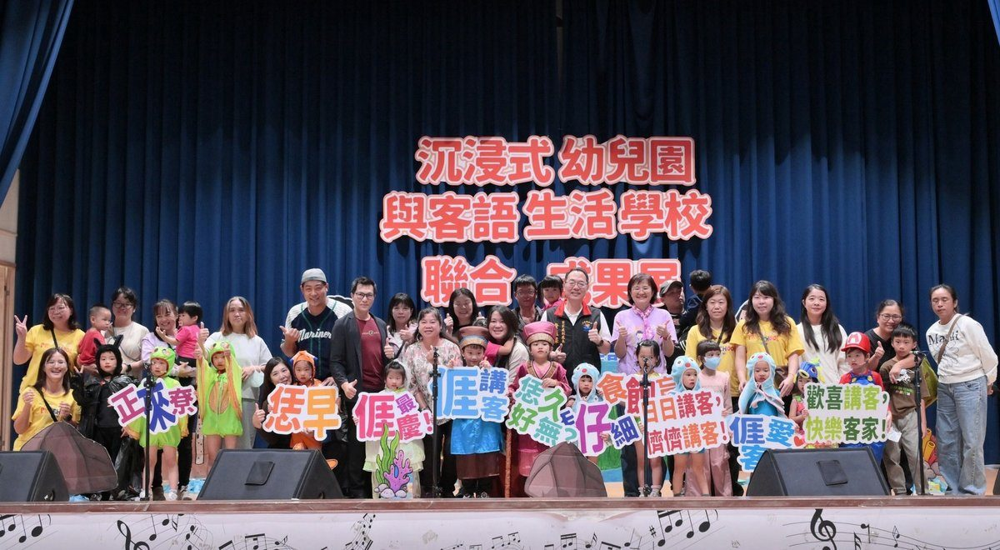

吉安鄉幼連兩年晉全國決賽 非客籍童流利說客話驚豔全場

可樂電子報小編/編輯
吉安鄉立幼兒園配合客家委員會及花蓮縣府推動「沉浸式客語教學與客語生活學校計畫」，將客語融入幼兒日常生活，讓孩子在自然情境中學習語言、認識客家文化。今(14)日上午，縣政府指導並由吉安鄉稻香國小承辦「115年沉浸式幼兒園與客語生活學校聯合成果展」，各校師生透過精彩展演分享教學成果，展現客語教育豐碩成果。

本次成果展以「大手牽細手，歡喜講客話」為主軸，集結吉安鄉幼、信義附幼、忠孝附幼、鑄強附幼、稻香附幼及稻香國小等多學校共同參與，孩子們以活潑生動的表演、自然流利的客語口說，展現平日學習成果，贏得現場熱烈掌聲。縣府客家事務處副處長詹益梁、稻香國小校長陳慈芳以及現場的專家學者與家長們皆被孩子們「純真」演出所折服，盼客語文化在親師生攜手努力下代代傳承。

活動中，吉安鄉幼帶來客語歌唱《慶慶慶》及戲劇《打幫打夥》，客語戲劇《打幫打夥》是吉安鄉幼參加115年客語戲劇競賽的精彩作品，由大、中、小班共15位幼兒跨年齡共同演出。劇情描述家園遭受破壞後，各角色齊心協力守護家園的故事。孩子們在舞臺上落落大方，即使非客籍的幼童也能自信說客話，讓觀眾看得目不轉睛，家長們更是忙碌拍攝為孩子留下珍貴成長紀錄。

吉安鄉立幼兒園自113年推動「沉浸式客語教學計畫」以來，至今已邁入第三年。園方以「生活化、遊戲化、情境化」為核心，將客語自然融入晨間問候、點名及用餐等日常作息，並結合主題課程、繪本故事、歌謠律動、戲劇展演與闖關活動，營造多元且自然的客語學習環境，讓幼兒在遊戲與互動中培養說客語的興趣。
在藝文競賽方面也屢創佳績，114年參加全國中小學客家藝文競賽東區初賽，榮獲幼兒園戲劇類「特優」，同年12月再於全國總決賽勇奪第三名；115年持續以客語戲劇《打幫打夥》參賽，再度榮獲東區初賽「特優」，連續兩年代表花蓮縣晉級全國總決賽，展現深耕客語教育的亮眼成果。

鄉長游淑貞表示，幼兒時期是語言發展的黃金階段，透過生活化、沈浸式的教學，能鼓勵孩子勇敢開口說客語。吉安鄉幼積極鼓勵幼兒參與「幼幼客語闖通關」認證活動，也深獲家長肯定與支持。未來將持續結合學校、家庭與社區資源，營造友善、自然的客語學習環境，讓客家語言文化向下紮根、世代傳承。
📸 更多現場紀實影像


▶ 延伸觀看
📺 相關報導影片：點此於 YouTube 觀看完整報導
🌟 掌握花蓮在地第一手資訊・歡迎訂閱追蹤
深度紀實報導、在地精采影音專題，第一時間接收最新消息！